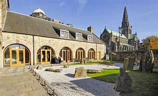

<!DOCTYPE html>
<html lang="en">
<head>
    <meta charset="UTF-8">
    <meta name="viewport" content="width=device-width, initial-scale=1.0">
    <title>Document</title>
</head>
<body>
    
</body>
</html>
  <title>GREAT WEEKEND IN GLASGOW</title>
  <link rel="stylesheet" href="styles.css">
  <br>
  <ul>
    <li><a href="index.html">Home</a></li>
    <li><a href="burrell.html">Burrell</a></li>
    <li><a href="galleryofmodernart.html">Gallery of Modern Art</a></li>
    <li><a href="riverside.html">Riverside</a></li>
    <li><a href="stmungos.html">St.Mungos</a></li>
    <li><a href="kelvingrove.html">Kelvingrove Museum</a></li>
  </ul>
  <div class="row">
    <div class="column">
      
      
      
    </div>
    <div class="column">
      
      
    </div>
    <div class="column">
      
      
      
    </div>


  <p>Named after Glasgow’s patron saint, St Mungo Museum explores the importance of religion in people's lives 
across different cultures and time periods. It is built on the site of the medieval Bishops’ Castle and 
designed in its style.</P>

<p><strong>Exhibits and Attractions</strong></p>
<p>The museum features galleries filled with religious artifacts, artwork, and historical objects. Visitors can
 also relax in the first Zen Garden in Britain.</P>

<p><strong>Location and History</strong></p>
<p>Located in Cathedral Square, northeast of Glasgow’s city centre, the museum was constructed in 1989 on the 
site of the old Bishops’ Castle. Parts of the original structure can still be seen in the cathedral square 
area.</p>

<p><strong>Accessibility:</strong></p>
<p>The museum is fully accessible with lifts, ramps, and accessible toilets. Wheelchair hire is available free 
offer charge at the reception.</p>

<p><strong>Nearby Attractions:</strong></p>
<p>Glasgow Cathedral: Built in the 1100s, it is still an active place of worship and houses the tomb of St Mungo.
The Provand’s Lordship: Glasgow’s oldest house, dating back to 1471, showcasing medieval life in the city.
Glasgow Necropolis: A Victorian cemetery behind the museum with monuments and views of the city.
Royal Infirmary Museum: Exhibiting the history of Glasgow’s Royal Infirmary from the 1800s onwards.
Transport and Parking
The museum is well connected via public transport:</p>

<p>High Street train station (5-minute walk)
Buchanan Street underground station (10-minute walk)
Bus routes: 19, 19A, 38, 38A, 38B, 38C, 38E, 57, 57A stop nearby
Paid parking available in the Cathedral precinct car parks.</P>

  <br>  
 
  <footer>©All Rights Reserved</footer>
</div>
<div class="logo2">
  
</div>


</head>
<body>
